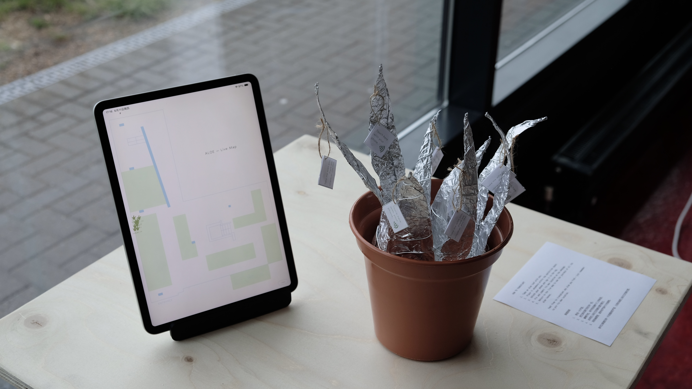
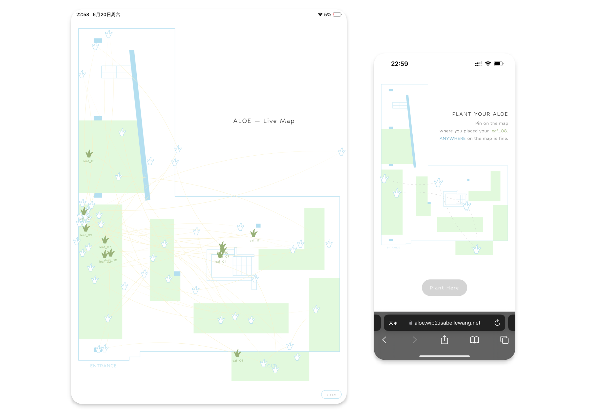
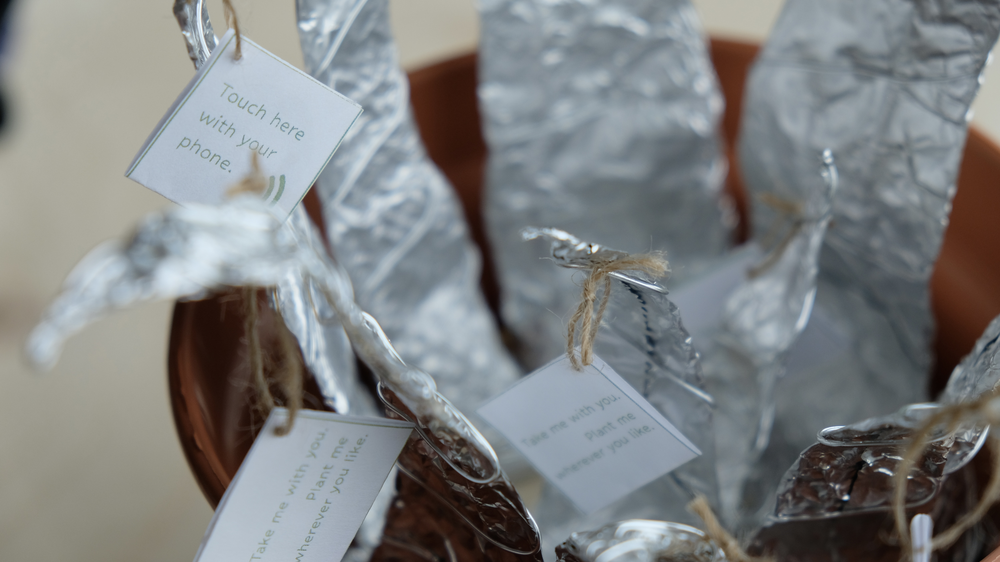
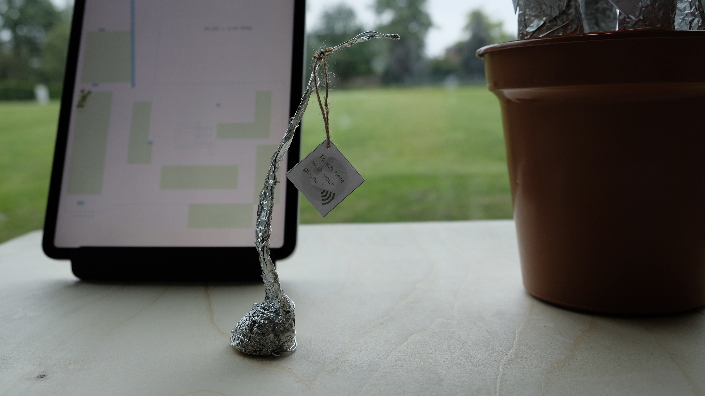

Alternative Aloe
This interactive installation takes the aloe as both a link to my hometown and a metaphor for my own life. An aloe can be easily transplanted, much like my childhood, which was relocated many times through migration.
WIP2
I focus on the act of transplant. Each leaf is embedded with an NFC tag; visitors are invited to take a leaf and replant it anywhere within the exhibition site. By tapping their phone to the tag, they open a webpage to submit the leaf's new location. The live map carries both the current position and the past trace of every leaf — showing the possibilities of where each aloe could be and might still go.




WIP1
Migration is difficult, yet one grows new branches each time. In this work, I simulate the act of breaking off and replanting an aloe: the more often the pot is moved, the faster it recovers.